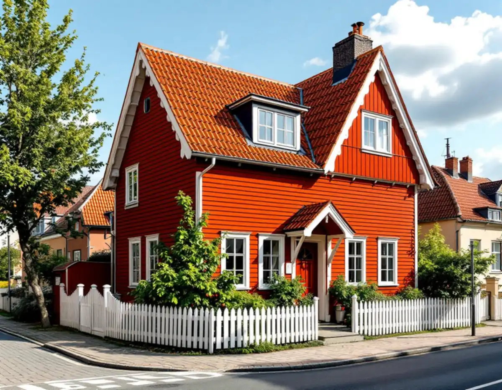
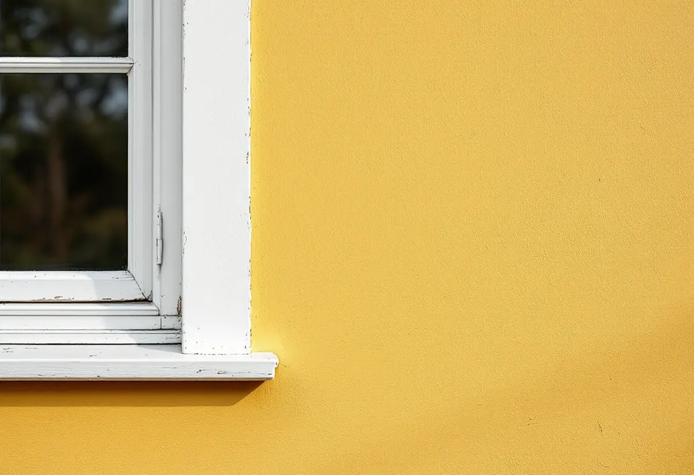

Platsbesök
Vi tittar på panel, puts, fönster och snickerier och gör skrapprov för att se färgtyp och äldre kulörer.
Gamla Enskede byggdes för att hänga ihop, och färgen var en del av helheten. När Stadsmuseet inventerade området 1974 konstaterade museet att alla hustyper från början hade enhetliga fasad- och takmaterial och en samstämmig färgsättning. Geal Entreprenad AB målar fasader, fönster och snickerier ute och inne i Enskede, med gratis platsbesök och skriftligt kostnadsförslag.

Gamla Enskede blev Stockholms första trädgårdsstad, anlagd efter stadsplanedirektören Per Olof Hallmans plan. Stadens vägledning Varsam utveckling av småhus- och villaområden beskriver hur det nationalromantiska blev tydligt här, med branta takfall och småspröjsade fönster. Fasaderna var ofta av liggande träpanel eller spån som tjärades eller målades med röd slamfärg, men även puts förekom.
Stadsmuseets inventering ger detaljerna typhus för typhus. Ett friliggande enfamiljshus beskrivs med rödfärgad, liggande fasspontpanel och vita foder och lister, ett annat med kalkputsad fasad i sprit- och slätputs, avfärgad i en gul färgton. Stockholmskällans text om Sockenplan sammanfattar att arkitekterna ofta arbetade om den röda stugan med vita knutar, och att putsade hus oftast avfärgades i ljusa kulörer.
Samma inventering beskriver hur området förändrades. Trähus som länge underhållits med traditionella material och metoder och målats om då och då försvann ibland bakom en fasad av eternit eller plåt. Museet noterade också motsatsen: husägare som bytte gammal panel mot ny av samma typ, och eternit från 1950-talet som plockats bort så att huset åter framstod som ett trähus.

Söder om kärnan blev formspråket ett annat. I Enskededalen blev 1920-talets klassiska stil rådande, enligt vägledningen: enkla volymer i ett och ett halvt plan, symmetriska fasader, stående träpanel med tunn lockläkt och en färgskala i ljusa, dämpade toner av grönt, gult eller grått.
Mellan 1930 och 1932 restes över 400 småstugor på Enskedefältet av självbyggare, med fasader av oljemålad träpanel. I stadens småstugeområden var färgsättningen från början strikt reglerad och begränsad till ett fåtal kulörer, ofta ljusa nyanser av grått, grönt och gult. Rödfärg fick användas efter särskild ansökan.
Den som vill veta hur en småstuga såg ut från början har ett bra underlag. Stadsbyggnadskontoret samlade i slutet av 1970-talet alla typritningar för småstugorna mellan 1927 och 1957 i en sammanställning, just för att ge underlag till dem som ville ändra sina stugor. Ritningen visar fönster, panel och detaljer som är lätta att tappa bort vid en ommålning.
Gamla Enskede är utpekat som riksintresse för kulturmiljövården. Sedan 1 december 2025 är kulörbyten på en- och tvåbostadshus i regel lovfria, men Stockholms stad skriver att du behöver söka bygglov för annars lovbefriade åtgärder om fastigheten ligger inom ett riksintresse för kulturmiljövården, i ett område som är utpekat som särskilt kulturhistoriskt värdefullt eller är blå- eller grönmarkerad i Stadsmuseets karta.
Utanför riksintresset avgör kartan och detaljplanen. Gult eller grått utan andra skydd betyder normalt inget lov, medan streckade ytor är miljöer som ännu inte inventerats och kan kräva lov. Stadsmuseet ger rådgivning om du mejlar adress, fastighetsbeteckning, byggnadsår, ombyggnader och foton av fasaderna, och museet brukar svara inom tre veckor.
Boverket räknar ommålning i samma kulör som underhåll. Att byta färgtyp är inget kulörbyte, men det kan påverka husets karaktärsdrag, och i ett område där inventeringen beskriver oljemålad panel och kalkavfärgad puts hör frågan till samma bedömning.
Den gula tonen på en kalkputsad Enskedevilla kan komma från järnvitriol. Riksantikvarieämbetet skriver att järnvitriol inte är ett pigment utan reagerar med kalken och ger en gulröd verkan, och att den nya kalkfärgen ofta också behöver lite järnvitriol när den gamla avfärgningen innehåller det. Skador lagas med kalkputs lik den befintliga, och putsen ska ha karbonatiserat i minst tre till fyra veckor innan den målas.
På panelen är förarbetet avgörande. Fasaden tvättas, avflagnad färg skrapas bort och grått, luddigt trä slipas fram till friskt virke. Rötskadat ändträ lagas med nytt trä innan något grundas. I parhusen och radhusen är det extra viktigt att båda halvorna får samma kulör och glans.
Ska teglet läggas om medan ställningen ändå står uppe, läs mer om takrenovering i Enskede eller takläggare i Enskede. Inomhus målar vi väggar, tak och snickerier och tapetserar.
Vi tittar på panel, puts, fönster och snickerier och gör skrapprov för att se färgtyp och äldre kulörer.
Vi kontrollerar om huset ligger i riksintresset, hur det är klassat och vad detaljplanen säger.
Färgtyp, kulör, förarbete och antal strykningar står med, så att förslaget kan bifogas en ansökan.
Tvätt, skrapning, lagning av trä och puts, kittning av fönster och skydd av trädgården.
Grundning och strykningar i lämpligt väder, med de torktider färgtypen kräver.
Vi går igenom resultatet tillsammans och bättrar där det behövs.
Skatteverket räknar målning av fasader, fönster, väggar och tak och tapetsering som rotarbete i ett småhus. Målning av staket och murar ger inget avdrag. Avdraget är 30 procent av arbetskostnaden, högst 50 000 kr per person och år och högst 75 000 kr tillsammans med rutavdrag.
Färg, material och resor ger inget avdrag. Är ni två som äger huset kan ni båda använda ert utrymme. Geal drar avdraget direkt på fakturan.
I Gamla Enskede väger snickerier, spröjsade fönster och verandor tungt, och kalkputs kräver lagning och väntetid innan den kan målas. På småstugorna är det oftare panelens skick och mängden skrapning som styr. Tomterna är små och gatorna smala, så ställningen planeras vid besöket. Platsbesöket är gratis och du får ett skriftligt kostnadsförslag.
Fasad, fönster och invändig målning.
Målare i Stockholm →Takbyte, takbesiktning och plåtarbeten.
Takläggare i Enskede →Trädgårdsstad med lertegel.
Takrenovering i Enskede →Trähus, putsade typhus och småstugor i Enskede.
Fasadrenovering i Enskede →Typhus, dubbelhus och småstugor.
Köksrenovering i Enskede →